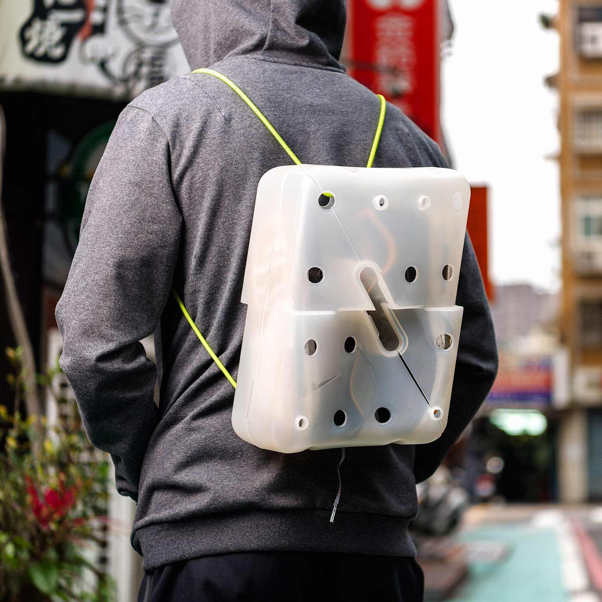
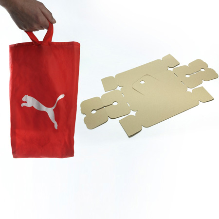
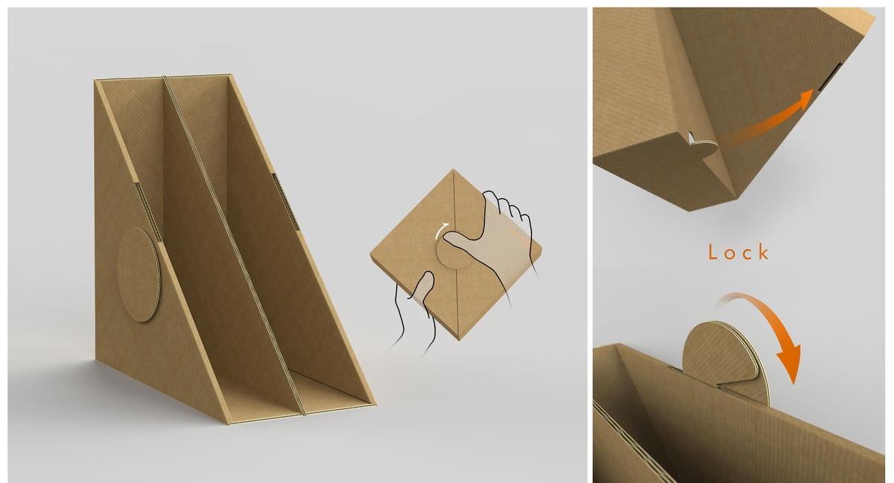

Стойка для растений
Подход в промышленном дизайне, при котором повседневные объекты не утилизируются, а повторно используются с изменением формы и функции. В отличие от классической переработки, материал сохраняется как физическая структура — переосмысливается и становится новым функциональным решением.
 Domestic Recycling · подход
Domestic Recycling · подход
- 01 Сохранение формы — частичное или полное сохранение исходной геометрии. Базовая конструкция используется как основа без радикальных изменений.
- 02 Изменение функции — предмет, предназначенный для одной задачи, начинает выполнять другую. Упаковка → хранение, рабочая поверхность, инструментальный модуль.
- 03 Минимальное вмешательство — никаких клеев и дополнительных материалов. Только пазы, сгибы и существующие соединения исходного объекта.
- 04 Доступная реализация — снижает затраты, упрощает производство, открывает процесс для самостоятельной сборки в бытовых условиях.
Air Max — упаковка как рюкзак
Упаковка обуви разработана так, что после извлечения продукта может использоваться как рюкзак. Конструкция из жёсткого переработанного пластика с отверстиями для крепления ремней. Упаковка изначально проектируется как функциональный объект, а не одноразовый элемент.

Clever Little Bag
Гибридная система: картонная основа + многоразовая сумка. Упаковка выполняет несколько функций — хранение, транспортировка, дальнейшее использование. Сокращает отходы и повышает функциональность.

Упаковка → полка
Упаковка после раскрытия превращается в компактную полку для хранения документов. Особенность: трансформация без дополнительных элементов, за счёт заранее предусмотренной геометрии и механики складывания.

Domestic recycling позволяет создавать новые функциональные объекты без дополнительных ресурсов, используя уже существующие конструкции. Подход сочетает простоту реализации, практическую ценность и экологическую составляющую.